Come funziona lo scripting di un videogioco?
Prima di tutto bisogna conoscere l'Engine che si sta utilizzando per lo sviluppo di un gioco (un engine puo' essere Unity 3D, Game Maker, Unreal Engine, Frostbite, CryEngine etc). La casa produttrce durante la programmazione di questo engine, mette a disposizione delle API relative ad un linguaggio da loro scelto per rappresentare l'engine.
Unity per esempio si programma in C# o Javascript... Unreal engine in C++ o Blueprint (un metodo di programmazione visuale) e cosi' via.
Unity
Unity e' suddiviso in alcune schermate fondamentali, la Hierarchy (dove si trovano gli assets, ovvero i file nel progetto), Inspector (dove si trovano gli script relativi ad un oggetto o prefab) e la Scene dove si trovano tutti gli oggetti attivi (e non) della scena attuale (tra cui la UI).
Queste finestre sono abbastanza vuote con un progetto in blank, tuttavia prendono solide fondamenta con i codici che tu stesso inserirai durante lo sviluppo.
L'Inspector sara' la finestra piu' utilizzata siccome contiene gli script per uno oggetto (cubo, player, enemy etc)... se io volessi far rotare un cubo automaticamente lo script sarebbe piu' o meno cosi'.
using System;
using System.Collection.Generics;
using UnityEngine;
//Inclusione delle librerie
public class Rotation_Cube : MonoBehaviour
{
public float Speed_Rotation = 0.1f;
private GameObject Object_To_Rotate;
private Transform Object_Transform;
//Questa variabile viene serializzata nell'Inspector del codice
private void Start()
{
Object_To_Rotate = this.gameObject;
Object_Transform = Object_To_Rotate.GetComponent<Transform>();
//Recupero l'oggetto dove e' allegato lo script
}
private void Update()
{
Object_Transform.Rotate(new Vector3(0, Time.deltaTime * Speed_Rotation,0));
}
}
public variable;
[SerializeField]
private variable;
this.transform;
this.gameObject;Conclusioni
A livello di logica e' molto facile da apprendere la sintassi di C# con Unity, tuttavia e' molto enorme la libreria, ed esistono innumerevoli Plugin scaricabili dal sito dell' Assets Store ufficiale.
Come riusciamo a vedere cosa ci sta attorno?
Siamo in grado di vedere le cose che ci circondano grazie ai raggi di luce che arrivano ai nostri occhi rimbalzando sulle superfici degli oggetti. Una parte dei raggi si disperde producendo il così chiamato effetto diffuse, l'altra parte rimbalza dalla superficie nella direzione opposta causando una riflessione, chiamata specular.
Metalli e non metalli (Isolanti) riflettono e diffondono la luce differentemente. Albedo, energy conservation, l'effetto fresnel e la complessa struttura dei rilievi influiscono sull'aspetto di un oggetto.
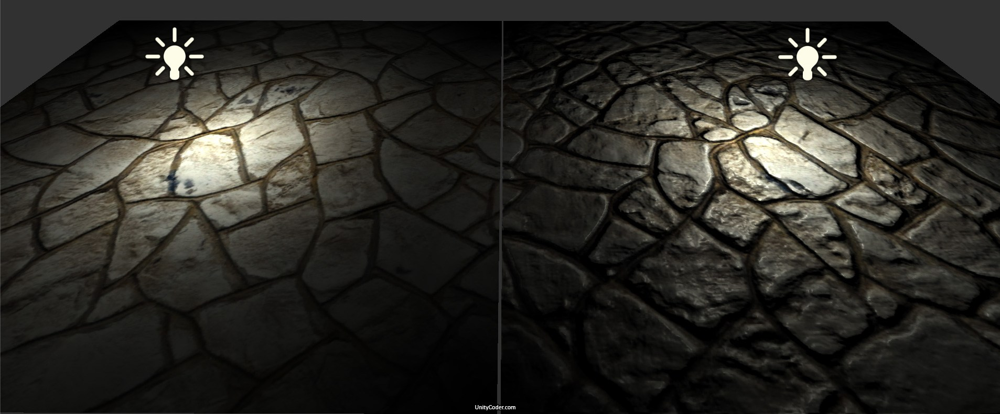
La differenza tra metalli ed isolanti?
Gli isolanti hanno una notevole capacità nel disperdere la luce che arriva sulla superficie (Diffuse Scattering). Ridotta invece è la loro abilità nel riflettere. Materiali con queste caratteristiche sono ad esempio la plastica, la stoffa, il cemento, la vernice e così via. Grazie al diffuse scattering possiamo vedere che la plastica rossa è rossa; i riflessi sulla superficie inveci sono dati quindi dalla capacità di riflessione dell'oggetto.
I metalli sono materiali che non hanno Diffuse Scattering (la diffusione è sempre nera), ma sono notevolmente caratterizzati da un riflesso colorato. Il rame ad esempio ha una diffusione di colore nero e un forte riflesso di un colore rossastro. L'oro ha una diffusione nera e una riflessione di colore giallo chiaro etc.
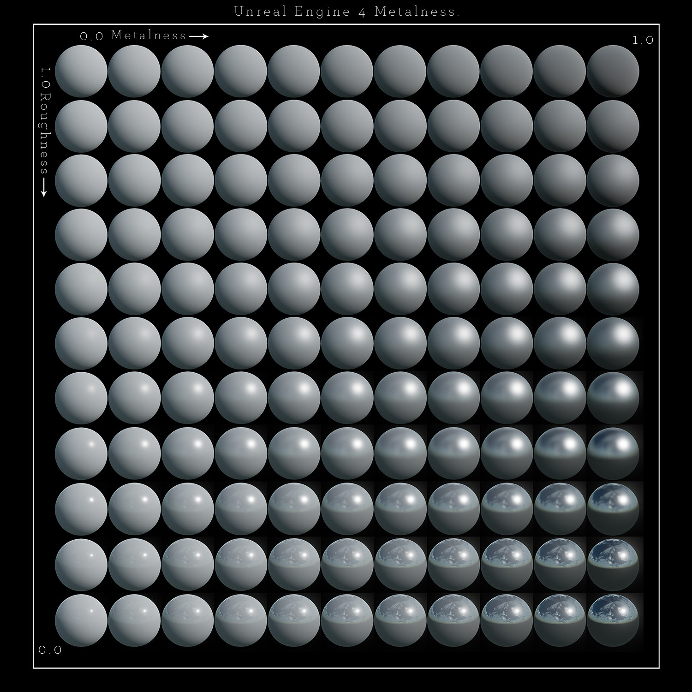
L'albedo
Albedo è la quantità di energia della luce riflessa o dispersa. In parole più semplici, è il colore della superficie del materiale che appare ai nostri occhi, che sia un metallo oppure un isolante. Negli isolanti, il colore albedo e quello della diffusione sono uguali; la situazione è diversa nei metalli.
Nonostante tutti i metalli come già detto abbiano una diffusione di colore nero, noi non li vediamo di colore nero grazie alla loro riflessione.
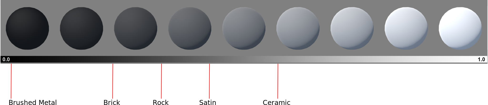
Cosa si definisce con Energy Conservation
In poche parole, più alta è l'instensità della riflessione, meno alta sarà quella della diffusione. Questo è perchè la somma delle intensità della riflessione e della diffusione non può superare l'intensità del raggio che è arrivato sulla superficie

Effetto Fresnel
Più piccolo è l'angolo di incontro della luce sulla superficie, più grande è la riflessione. Tutti i materiali in natura hanno questo effetto in natura.
E' interessante come a 0 gradi di inclinazione, tutti i materiali riflettono il 100% della luce, ma l'aspetto del riflesso viene danneggiato dalla struttura della superficie.
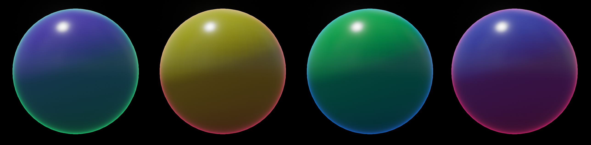
Influenza della struttura sui riflessi?
Ciò può accadere in ogni superficie dotata di micro-rilievi, piccoli buchi, depressioni o graffi visibili solo al microscopio. Questo causa l'effetto roughness sulla supericie, quando il riflesso appare sfocato. Perciò se la superficie è perfettamente liscia, il riflesso lo sarà altrettanto.
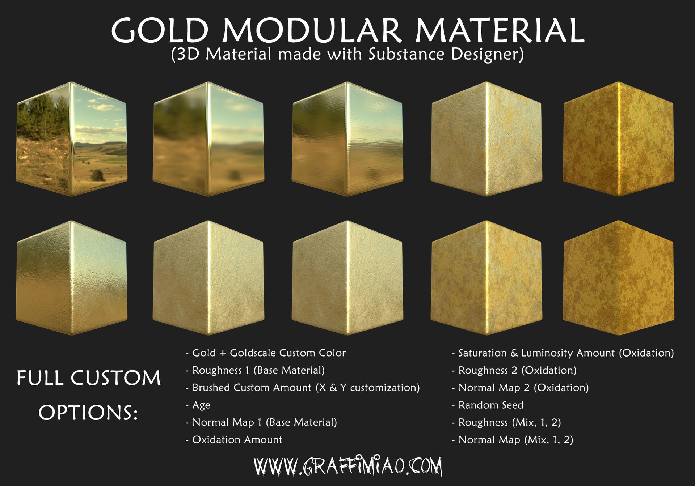
Siamo in grado di vedere le cose che ci circondano grazie ai raggi di luce che arrivano ai nostri occhi rimbalzando sulle superfici degli oggetti. Una parte dei raggi si disperde producendo il così chiamato effetto diffuse, l'altra parte rimbalza dalla superficie nella direzione opposta causando una riflessione, chiamata specular.
Metalli e non metalli (Isolanti) riflettono e diffondono la luce differentemente. Albedo, energy conservation, l'effetto fresnel e la complessa struttura dei rilievi influiscono sull'aspetto di un oggetto.
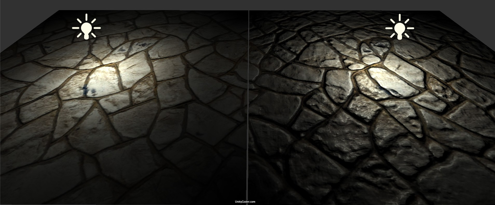
La differenza tra metalli ed isolanti?
Gli isolanti hanno una notevole capacità nel disperdere la luce che arriva sulla superficie (Diffuse Scattering). Ridotta invece è la loro abilità nel riflettere. Materiali con queste caratteristiche sono ad esempio la plastica, la stoffa, il cemento, la vernice e così via. Grazie al diffuse scattering possiamo vedere che la plastica rossa è rossa; i riflessi sulla superficie inveci sono dati quindi dalla capacità di riflessione dell'oggetto.
I metalli sono materiali che non hanno Diffuse Scattering (la diffusione è sempre nera), ma sono notevolmente caratterizzati da un riflesso colorato. Il rame ad esempio ha una diffusione di colore nero e un forte riflesso di un colore rossastro. L'oro ha una diffusione nera e una riflessione di colore giallo chiaro etc.
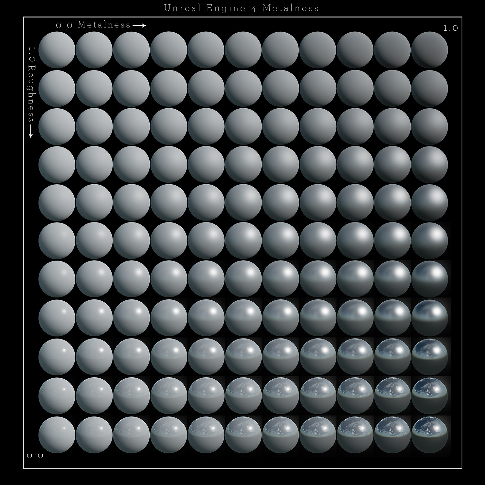
L'albedo
Albedo è la quantità di energia della luce riflessa o dispersa. In parole più semplici, è il colore della superficie del materiale che appare ai nostri occhi, che sia un metallo oppure un isolante. Negli isolanti, il colore albedo e quello della diffusione sono uguali; la situazione è diversa nei metalli.
Nonostante tutti i metalli come già detto abbiano una diffusione di colore nero, noi non li vediamo di colore nero grazie alla loro riflessione.
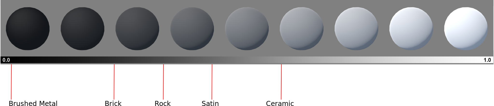
Cosa si definisce con Energy Conservation
In poche parole, più alta è l'instensità della riflessione, meno alta sarà quella della diffusione. Questo è perchè la somma delle intensità della riflessione e della diffusione non può superare l'intensità del raggio che è arrivato sulla superficie
Effetto Fresnel
Più piccolo è l'angolo di incontro della luce sulla superficie, più grande è la riflessione. Tutti i materiali in natura hanno questo effetto in natura.
E' interessante come a 0 gradi di inclinazione, tutti i materiali riflettono il 100% della luce, ma l'aspetto del riflesso viene danneggiato dalla struttura della superficie.
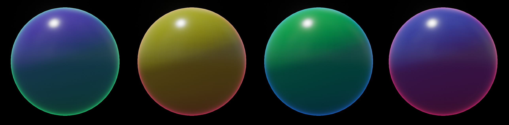
Influenza della struttura sui riflessi?
Ciò può accadere in ogni superficie dotata di micro-rilievi, piccoli buchi, depressioni o graffi visibili solo al microscopio. Questo causa l'effetto roughness sulla supericie, quando il riflesso appare sfocato. Perciò se la superficie è perfettamente liscia, il riflesso lo sarà altrettanto.
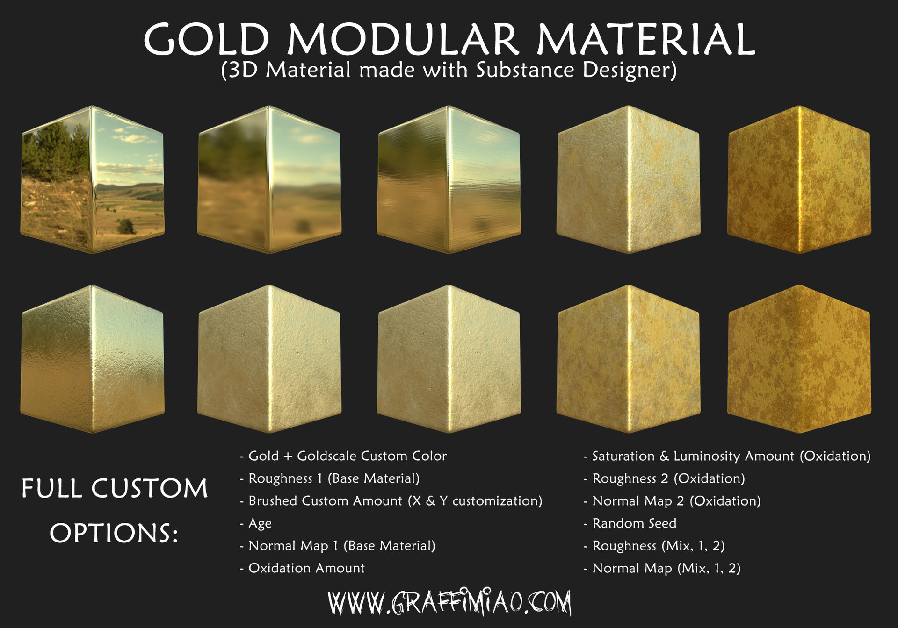
Ambiente Low Poly
Lo stile low-poly è una tendenza molto in voga in questo periodo. Troviamo modelli del genere ovunque: libri, animazioni, applicazioni... Per rispettare questo stile bisogna far si che i modelli abbiamo meno poligoni possibili ed inoltre bisogna mantenere le forme più vicine possibile alle forme geometriche di base. Se si riscontrano dei problemi nel far ciò, vengono in aiuto modificatori come il Decimate Modifier. E' inoltre possibile utilizzare il comando Triangulate Faces per dare effetti più caratteristici.
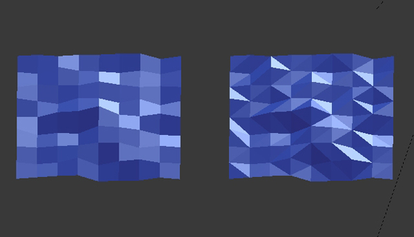
La luce è la parte fondamentale di una scena: la giusta illuminazione è in grado di valorizzare l'intero lavoro, per questo è necessario ricordarsi di utilizzare l'Ambient Occlusion (nel pannello scene) e il Flat Shading, posizionando correttamente le nostre fonti di luce rispetto alla camera.
La creazione della scena
Dopo aver preso un nuovo file, ed aver attivato le impostazioni di rendering sopra descritte, aggiungiamo un Plane con la shortcut Shift-A, dopo di ciò grazie al tasto S (Scale) aumentiamo le sue dimensioni. Prendendo il tasto TAB ci sarà possibile passare alla modalità Edit, quindi selezionamo la faccia del piano e dopo aver premuto il tasto destro del mouse, selezioniamo Subdivide. In questo modo il piano verrà suddiviso in più quadrati (ripetere l'operazione dalle 3 alle 4 volte, prestando attenzione a non suddividere la superficie troppe volte, perchè ciò non renderebbe più la scena low poly). Dopo aver suddiviso la superficie, andiamo a selezionare i vertici che ci interessa innalzare al fine di creare dei rilievi come montagne a nostro piaciere. Quindi selezioniamo più vertici contemporaneamente tenendo premuto il tasto Shift. Attiviamo il proportinal editing e selezioniamo come modalità: Smooth.
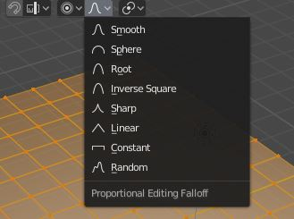
Ora possiamo premere il tasto G (Grab) per afferrare i vertici e in seguito il tasto Z (per limitare il comando Grab solo sull'asse Z,ovvero l'altezza). Abbiamo inoltre la possibilità di aumentare o diminuire l'area di influenza del Grab con la rotellina del mouse.
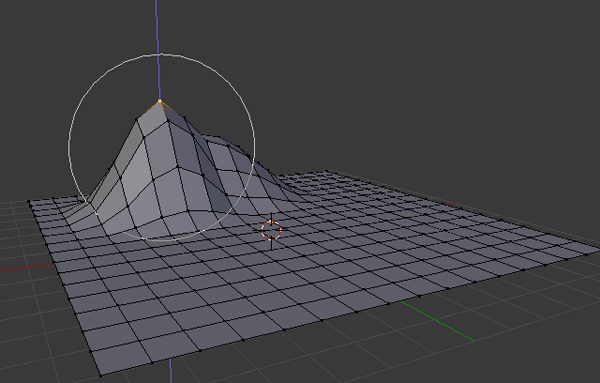
Dopo aver ottenuto la forma desiderata, premere il tasto A per selezionare tutti i vertici, a sua volta verranno quindi selezionate anche le facce, e premere in seguito il tasto Triangulate Faces. Per dare ora un effetto ondeggiante a tutto il piano, selezioniamo alcuni veritici a nostra scelta e nella tendina delle opzioni per il proportional editing selezioniamo Random, quindi usiamo il comando Grab (G – Z) per aggiungere i dettagli.
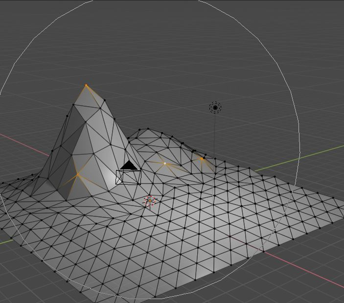
I Materiali
Selezioniamo ora tutta la superficie con il tasto A ed iniziamo ad aggiunere il materiale. Per farlo rechiamoci sul pannello di destra nella finestra Material, e premiamo il tasto New. Cambiamo la superficie da Principled BSDF a Diffuse e selezioniamo un colore Verde, per comodità possiamo anche rinominare il materiale.
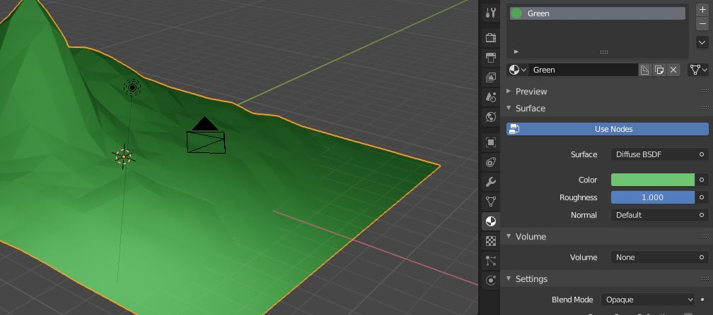
E' possibile aggiungere più materiali ad una singola Mesh, per farlo utilizziamo il pulsante ' + ' e creiamo un nuovo materiale di colore marrone per la montagna. Ora premiamo il tasto numpad-3 oppure numpad-1 per entrare in una vista che ci permette di selezionare semplicemente gli elementi da colorare, attiviamo la trasparenza della mesh ed entriamo in selezione facce premendo il tasto 3. Selezioniamo quindi tramite la box selection le facce da colorare.

Dopo aver selezionato ciò che ci interessa, selezioniamo il colore Brown e premiamo il tasto Assign. Ora tutti i vertici che erano stati selezionati hanno preso il colore Brown. Se dopo aver fatto l'operazione ci sono delle facce che rovinano la composizione avendo preso un certo colore, è possibile selezionarle singolarmente ed assegnare loro un nuovo colore. Ripetiamo quindi queste operazioni e andiamo a creare la cima innevata.
Questo dovrebbe quindi essere il risultato ottenuto.
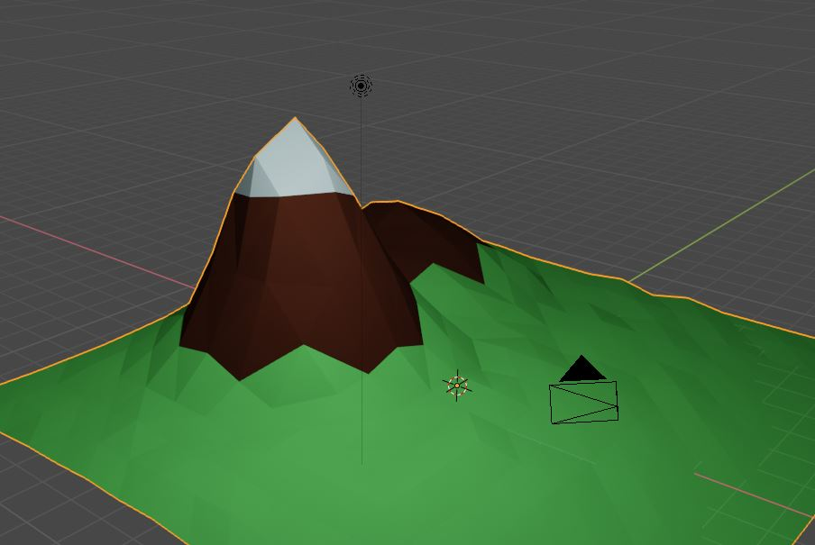
Modellazione Alberi
Ora è il momento di aggiungere elementi alla scena. Per questo tutorial modelleremo un albero. Se preferiamo possiamo selezionare la montagna e premere il tasto H per nascondere l'elemento e pulire la scena. Un metodo molto semplice ma efficace per la creazione di un albero è l'utilizzo del modifier Skin. Quindi Shift-A, aggiungiamo un Plane, entriamo in Edit mode premendo Tab, selezioniamo 3 Verici su 4, premiamo il tasto X ed infine facciamo Delete Vertices.
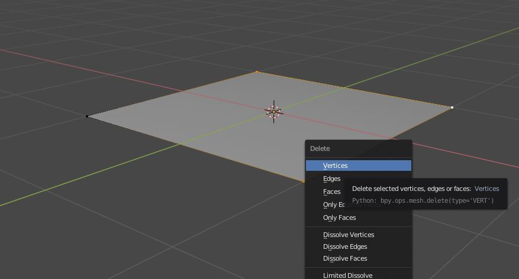
Selezioniamo ora l'ultimo vertice rimasto e nel pannello Modifiers (Riconoscibile grazie al simbolo della chiave ingese) aggiungiamo il modifier Skin. Attorno al nostro unico vertice rimanente è comparso un cubo: al nostro vertice è stato dato uno spessore. Premiamo ora il tasto E (Extrude) e sbizzarriamoci con le forme che più ci piacciono. Dopo ogni Extrude, è possibile con la shortcut CTRL-A ridurre la grandezza dell'estremità del ramo. Per fare tutto ciò è necessario avere ancora attiva la trasparenza delle mesh in modo da poter andare a selezionare i vertici all'interno del blocco creato dal modifier.
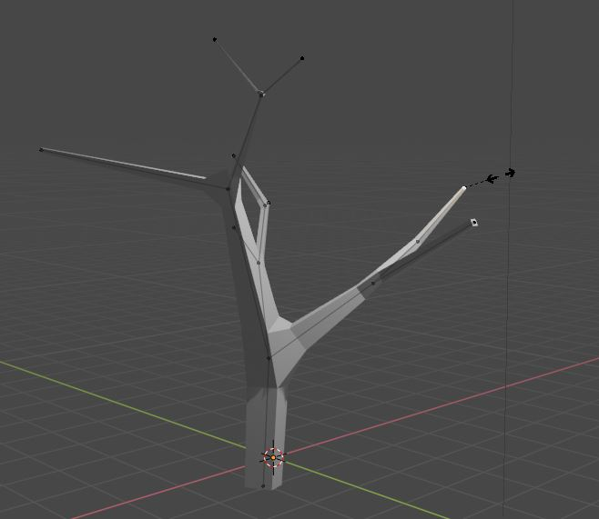
Dopo aver fatto ciò siamo quasi arrivati alla fine della parte di modellazione. Applichiamo ora le modifiche del modifier e assegnamo un colore come già fatto in precedenza. E' consigliato utilizzare un marrone ovviamente diverso a quello precendentemente usato. Ora per fare le foglie utilizzeremo una mesh chiamata Ico-Sphere, la sua forma è molto caratteristica per una composizione low poly. Quindi CTRL-A e aggiungiamo la mesh. Assegnamogli un colore verde (oppure un colore a nostro piacere, nel mio caso il rosa).
Spostiamo ora la mesh su un ramo, ridimensioniamola con il tasto S (Scale) e duplichiamola (SHIFT-D), quindi copriamo tutti i rami. In seguito selezioniamo tutte le mesh una ad una (per ultimo il tronco) e tramite il comando Join uniamo tutto in una stessa mesh.
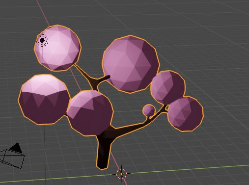
Potere ora decidere di fare quanti tipi di alberi volete. Un tipo di albero molto facile da fare è il pino. Aggiungete un vertice, attivate il modifier Skin e alzatelo, stringendone l'estremità (avete ora creato il tronco). In seguito posizionate un esagono dentro il tronco, utilizzate il comando inset (tasto I in edit mode, avendo la faccia selezionata) e create un esagono più piccolo. Selezionate questo esagono interno e con il tasto grab alzate l'anello in modo da dare una forma conica. Duplicate e scalate la forma più volte fino a creare più strati di foglie, assegnate i colori ed il lavoro è fatto. Per completare la composizione non resta ora che duplicare l'albero stesso e posizionare le copie attorno alla montagna. Come dettaglio aggiuntivo grazie alle Ico-sphere possiamo creare delle nuvole. Lavoriamo ora sulla scena stessa. Posizioniamo la nostra visuale come ci interessa che venga il rendering e tramite la shortcut CTRL ALT numpad-0 spostiamo la telecamera alla nostra visuale. Tramite il tasto G possiamo spostare la telecamera ulteriormente mentre siamo al suo interno. Possiamo ora sbizzarrirci nella gestione del cielo. Io ho utilizzato una composizione di nodi riferiti al World per creare un cielo stellato.
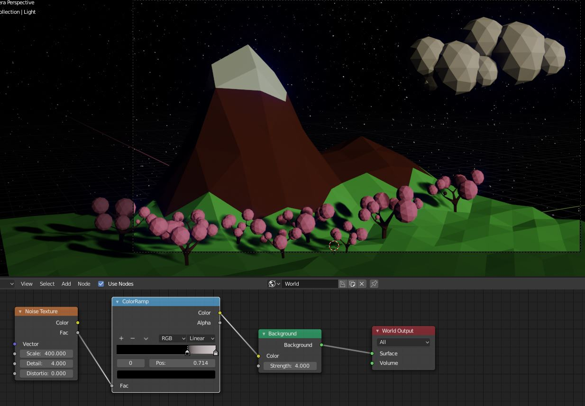
Questo è un esempio, ma ci sono tantissime scelte possibili, una di queste è ad esempio utilizzare come sfondo un HDRI.
Risultato finale
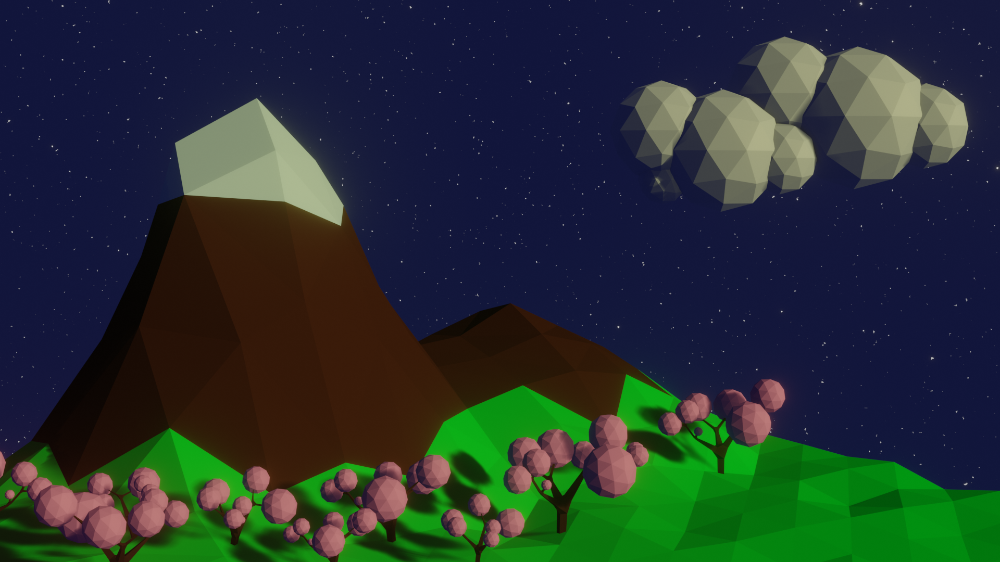
Lo stile low-poly è una tendenza molto in voga in questo periodo. Troviamo modelli del genere ovunque: libri, animazioni, applicazioni... Per rispettare questo stile bisogna far si che i modelli abbiamo meno poligoni possibili ed inoltre bisogna mantenere le forme più vicine possibile alle forme geometriche di base. Se si riscontrano dei problemi nel far ciò, vengono in aiuto modificatori come il Decimate Modifier. E' inoltre possibile utilizzare il comando Triangulate Faces per dare effetti più caratteristici.
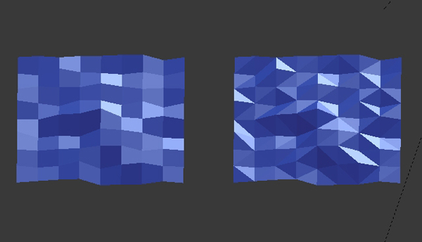
La luce è la parte fondamentale di una scena: la giusta illuminazione è in grado di valorizzare l'intero lavoro, per questo è necessario ricordarsi di utilizzare l'Ambient Occlusion (nel pannello scene) e il Flat Shading, posizionando correttamente le nostre fonti di luce rispetto alla camera.
La creazione della scena
Dopo aver preso un nuovo file, ed aver attivato le impostazioni di rendering sopra descritte, aggiungiamo un Plane con la shortcut Shift-A, dopo di ciò grazie al tasto S (Scale) aumentiamo le sue dimensioni. Prendendo il tasto TAB ci sarà possibile passare alla modalità Edit, quindi selezionamo la faccia del piano e dopo aver premuto il tasto destro del mouse, selezioniamo Subdivide. In questo modo il piano verrà suddiviso in più quadrati (ripetere l'operazione dalle 3 alle 4 volte, prestando attenzione a non suddividere la superficie troppe volte, perchè ciò non renderebbe più la scena low poly). Dopo aver suddiviso la superficie, andiamo a selezionare i vertici che ci interessa innalzare al fine di creare dei rilievi come montagne a nostro piaciere. Quindi selezioniamo più vertici contemporaneamente tenendo premuto il tasto Shift. Attiviamo il proportinal editing e selezioniamo come modalità: Smooth.
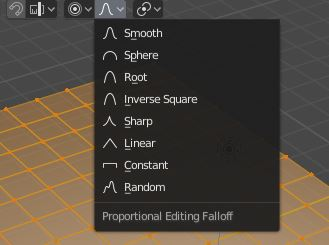
Ora possiamo premere il tasto G (Grab) per afferrare i vertici e in seguito il tasto Z (per limitare il comando Grab solo sull'asse Z,ovvero l'altezza). Abbiamo inoltre la possibilità di aumentare o diminuire l'area di influenza del Grab con la rotellina del mouse.
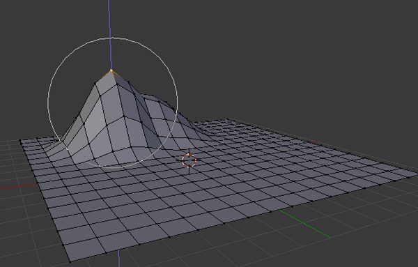
Dopo aver ottenuto la forma desiderata, premere il tasto A per selezionare tutti i vertici, a sua volta verranno quindi selezionate anche le facce, e premere in seguito il tasto Triangulate Faces. Per dare ora un effetto ondeggiante a tutto il piano, selezioniamo alcuni veritici a nostra scelta e nella tendina delle opzioni per il proportional editing selezioniamo Random, quindi usiamo il comando Grab (G – Z) per aggiungere i dettagli.
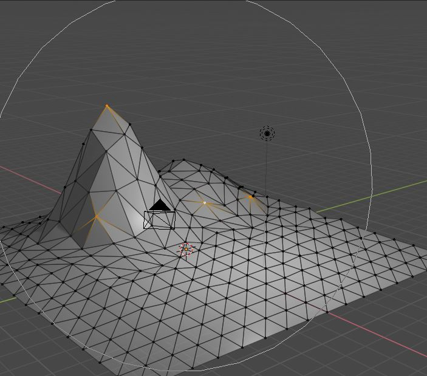
I Materiali
Selezioniamo ora tutta la superficie con il tasto A ed iniziamo ad aggiunere il materiale. Per farlo rechiamoci sul pannello di destra nella finestra Material, e premiamo il tasto New. Cambiamo la superficie da Principled BSDF a Diffuse e selezioniamo un colore Verde, per comodità possiamo anche rinominare il materiale.
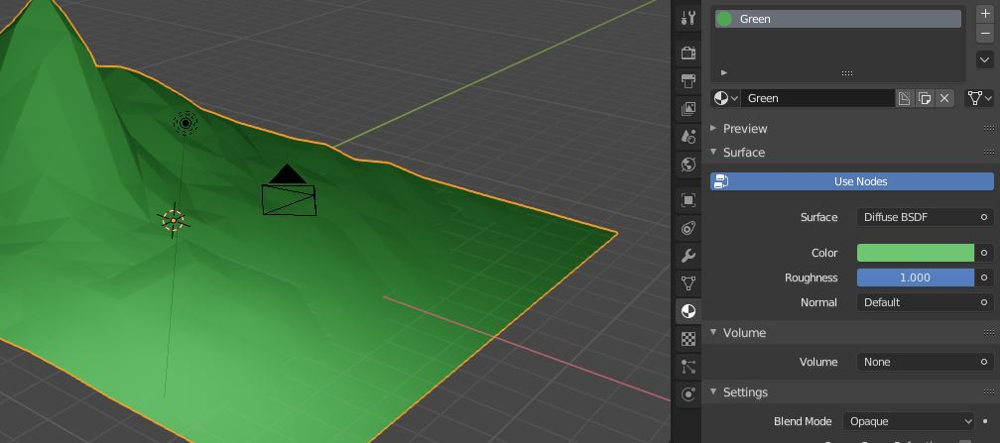
E' possibile aggiungere più materiali ad una singola Mesh, per farlo utilizziamo il pulsante ' + ' e creiamo un nuovo materiale di colore marrone per la montagna. Ora premiamo il tasto numpad-3 oppure numpad-1 per entrare in una vista che ci permette di selezionare semplicemente gli elementi da colorare, attiviamo la trasparenza della mesh ed entriamo in selezione facce premendo il tasto 3. Selezioniamo quindi tramite la box selection le facce da colorare.
Dopo aver selezionato ciò che ci interessa, selezioniamo il colore Brown e premiamo il tasto Assign. Ora tutti i vertici che erano stati selezionati hanno preso il colore Brown. Se dopo aver fatto l'operazione ci sono delle facce che rovinano la composizione avendo preso un certo colore, è possibile selezionarle singolarmente ed assegnare loro un nuovo colore. Ripetiamo quindi queste operazioni e andiamo a creare la cima innevata.
Questo dovrebbe quindi essere il risultato ottenuto.
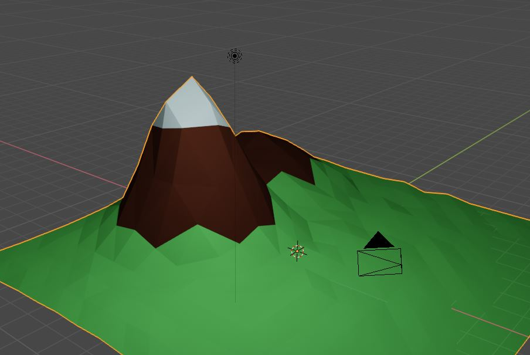
Modellazione Alberi
Ora è il momento di aggiungere elementi alla scena. Per questo tutorial modelleremo un albero. Se preferiamo possiamo selezionare la montagna e premere il tasto H per nascondere l'elemento e pulire la scena. Un metodo molto semplice ma efficace per la creazione di un albero è l'utilizzo del modifier Skin. Quindi Shift-A, aggiungiamo un Plane, entriamo in Edit mode premendo Tab, selezioniamo 3 Verici su 4, premiamo il tasto X ed infine facciamo Delete Vertices.
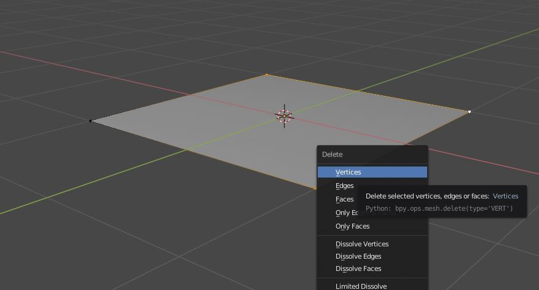
Selezioniamo ora l'ultimo vertice rimasto e nel pannello Modifiers (Riconoscibile grazie al simbolo della chiave ingese) aggiungiamo il modifier Skin. Attorno al nostro unico vertice rimanente è comparso un cubo: al nostro vertice è stato dato uno spessore. Premiamo ora il tasto E (Extrude) e sbizzarriamoci con le forme che più ci piacciono. Dopo ogni Extrude, è possibile con la shortcut CTRL-A ridurre la grandezza dell'estremità del ramo. Per fare tutto ciò è necessario avere ancora attiva la trasparenza delle mesh in modo da poter andare a selezionare i vertici all'interno del blocco creato dal modifier.
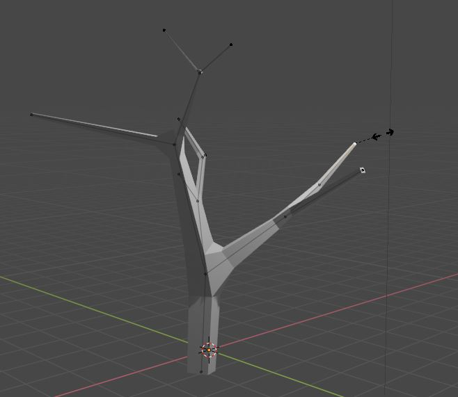
Dopo aver fatto ciò siamo quasi arrivati alla fine della parte di modellazione. Applichiamo ora le modifiche del modifier e assegnamo un colore come già fatto in precedenza. E' consigliato utilizzare un marrone ovviamente diverso a quello precendentemente usato. Ora per fare le foglie utilizzeremo una mesh chiamata Ico-Sphere, la sua forma è molto caratteristica per una composizione low poly. Quindi CTRL-A e aggiungiamo la mesh. Assegnamogli un colore verde (oppure un colore a nostro piacere, nel mio caso il rosa).
Spostiamo ora la mesh su un ramo, ridimensioniamola con il tasto S (Scale) e duplichiamola (SHIFT-D), quindi copriamo tutti i rami. In seguito selezioniamo tutte le mesh una ad una (per ultimo il tronco) e tramite il comando Join uniamo tutto in una stessa mesh.
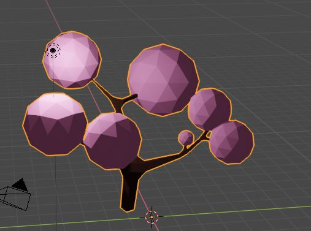
Potere ora decidere di fare quanti tipi di alberi volete. Un tipo di albero molto facile da fare è il pino. Aggiungete un vertice, attivate il modifier Skin e alzatelo, stringendone l'estremità (avete ora creato il tronco). In seguito posizionate un esagono dentro il tronco, utilizzate il comando inset (tasto I in edit mode, avendo la faccia selezionata) e create un esagono più piccolo. Selezionate questo esagono interno e con il tasto grab alzate l'anello in modo da dare una forma conica. Duplicate e scalate la forma più volte fino a creare più strati di foglie, assegnate i colori ed il lavoro è fatto. Per completare la composizione non resta ora che duplicare l'albero stesso e posizionare le copie attorno alla montagna. Come dettaglio aggiuntivo grazie alle Ico-sphere possiamo creare delle nuvole. Lavoriamo ora sulla scena stessa. Posizioniamo la nostra visuale come ci interessa che venga il rendering e tramite la shortcut CTRL ALT numpad-0 spostiamo la telecamera alla nostra visuale. Tramite il tasto G possiamo spostare la telecamera ulteriormente mentre siamo al suo interno. Possiamo ora sbizzarrirci nella gestione del cielo. Io ho utilizzato una composizione di nodi riferiti al World per creare un cielo stellato.
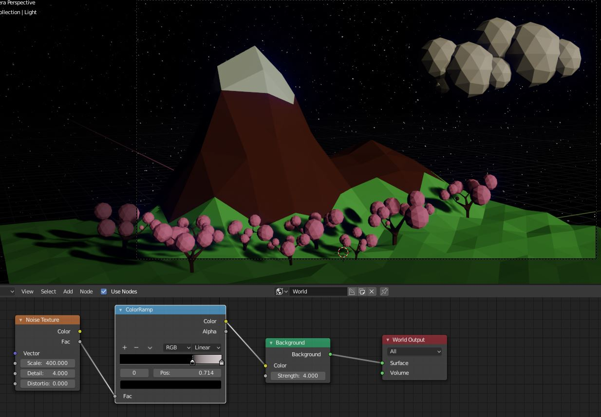
Questo è un esempio, ma ci sono tantissime scelte possibili, una di queste è ad esempio utilizzare come sfondo un HDRI.
Risultato finale
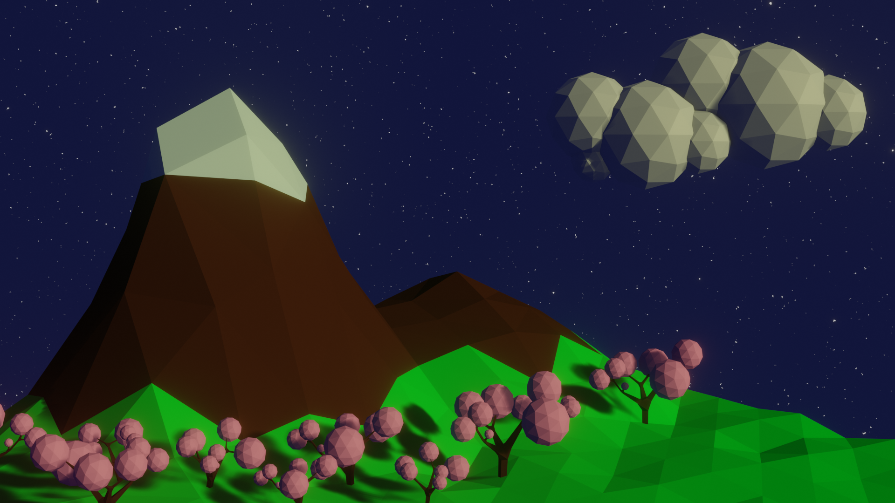
Come funziona il networking per un gioco
Prima di partire a palla sul networkin e su come funzionano, facciamo un paio di premesse: per networking si intende la modifica in tempo reale dei dati del Client su un Server accessibile da altri Client.
Per far si che il server diventi sicuro non bisogna mai mandare dati dal Client in modo aperto, ma mandare richieste quindi, si gerarchizza e si struttura l'architettura server affinche ci siano richieste pubbliche che ritornano valori pubblici e operazioni private mediante richieste e controlli di validita' sul server stesso.
Questa struttura si dice "Authoritarian Server", si intende che con qualsiasi linguaggio e' possibile comunicare, tuttavia ci sono metodi piu' o meno utili per un determinato lavoro.
Giochi strutturati statici possono lavorare anche sotto PHP mandando richieste in TCP o HTTP.
Giochi strutturati dinamici invece non possono lavorare in HTTP siccome il tempo di richiesta di una pagina web diventa sempre lunga e quindi rallenterebbe il gioco. Allora si lavora in TCP e spesso si utilizzano Framework di Unity come Unet, Photon ecc oppure si possono creare socket con qualsiasi linguaggio si voglia (per esempio Socket.IO basato su Node.JS).
Auth semplice
Un semplice esempio di Authoritarian Server puo' essere un gioco Quiz, dove per avere 4 risposte possibili le devo mischiare e mascherare la vera tra le false. Il client manda al server la richiesta della domanda, il server scarica la domanda in locale e si ritrova in una situazione di questo tipo
var quiz_su_server =
{
id:1,
testo: "testo",
risposte_false: ["rispo1", "rispo2", "rispo3"],
risposta_vera: "rispo4"
}
var quiz_su_client =
{
id:1,
testo: "testo",
risposte: ["rispo3", "rispo1", "rispo2", "rispo4"]
}
var risposta =
{
id_domanda:1,
risposta: "rispo3"
}
Allora il server se la vede corretta si muove per dare guadagni ecc, ma il server, il client si muove solamente come View.
Programmati il tuo spazio di lavoro
In questa parte ci soffermiamo a parlare della malleabilita' che l'Editor di Unity possiede. Infatti bisogna separare l'idea dell'Engine dall'Editor, perche' mentre uno lavora sul risultato finale, quindi su Behaviour, l'altro cerca di aiutare il programmatore o il desgner a non perdere troppo tempo nel fare processi che magari si possono "Automatizzare".
Questo e' la voce che e' stata aggiunta al menu pre esistente di Unity
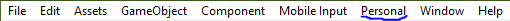
Questo invece e' il risultato finale dello script MyWindow.cs.
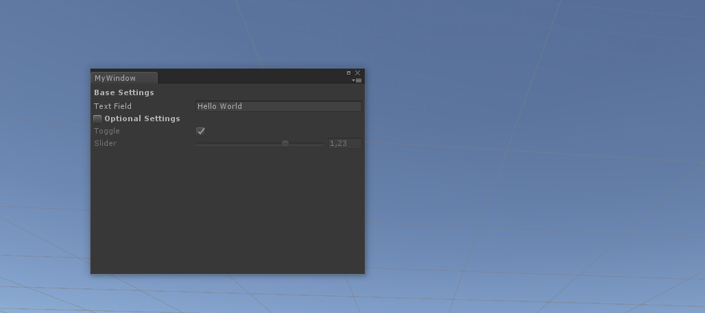
Lo script viene automaticamente letto da Unity, non devi metterlo da nessuna parte, tuttavia la prassi consiglia di metterlo all'interno di una cartella nominata Editor, che durante la Build del progetto viene automaticamente esclusa, siccome gli Editor Script non influiscono in nessun modo sull'Engine.
Gizmos
Le gizmos sono linee immaginarie che facilitano ad utilizzare o a capire a primo impatto, raggi, spazi oppure possono delimitare anche percorsi di IA ecc. Sono linee che con l'Editor vanno a stretto contatto e facilita non poco l'uso. Queste linee si definiscono immaginarie perche' non visibile, almeno non in maniera base, in Runtime (ovvero durante l'esecuzione del gioco).
Alcune Gizmos a volte vengono utilizzate per la generazione di linee da 1px anche durante il gioco stesso, ma oramai sono quasi rimpiazzate dalle Mesh Line, che sono linee non per forza di 1px, interactabili e sopratutto estensibili.
Qui vediamo un esempio di Gizmo line
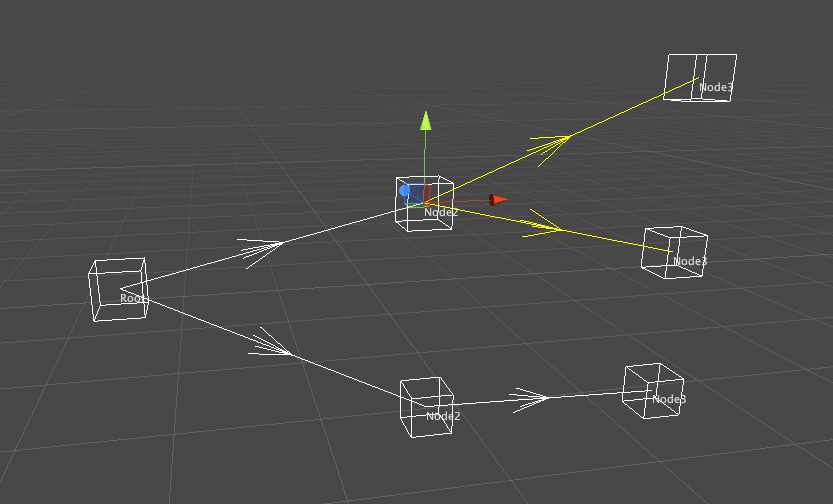
Qui invece uno di mesh line
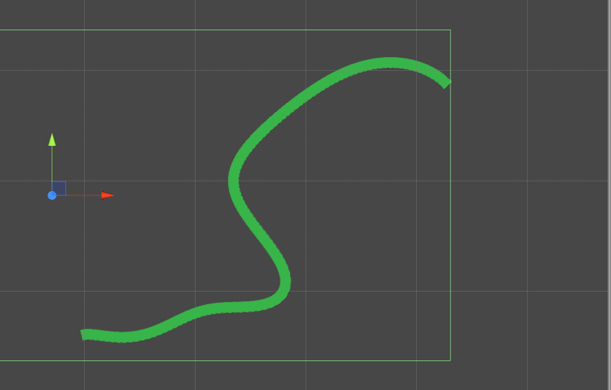
Conoscere queste tecniche puo' permettere ad un team di essere perfettamente sincronizzato nel lavoro, senza dover toccare con mano script fatti da alti.
Solitamente infatti uno script e' iniziato e finito dalla persona stessa e attraverso gli script editor, o l'inspector ne modifichi solo i parametri. Questo permette facilita' di lavoro senza doversi immedesimare sempre nella testa dell'altro programmatore.
In questa parte ci soffermiamo a parlare della malleabilita' che l'Editor di Unity possiede. Infatti bisogna separare l'idea dell'Engine dall'Editor, perche' mentre uno lavora sul risultato finale, quindi su Behaviour, l'altro cerca di aiutare il programmatore o il desgner a non perdere troppo tempo nel fare processi che magari si possono "Automatizzare".
using UnityEngine;
//Includo la libreria che gestisce l'Editor
using UnityEditor;
//Rendo ereditaria la classe che mi permette di creare una Window
public class MyWindow : EditorWindow
{
string myString = "Hello World";
bool groupEnabled;
bool myBool = true;
float myFloat = 1.23f;
//Questa linea permette di aggiungere una voce al menu' di Unity
[MenuItem("Personal/My Window")]
//Quando apro la finestra creo una classe window e la mostro, siccome voglio solo una finestra aperta la imposto a static
static void Init()
{
//Recupera una finestra esistente, o ne crea una nel caso non ci fosse
MyWindow window = (MyWindow)EditorWindow.GetWindow(typeof(MyWindow));
//Mostro la finestra
window.Show();
}
//Questa particolare funzione, basica di Unity, permette di lavorare con i componenti grafici detti GUI, ormai deprecati
//nell'utilizzo dell'Engine, ma ancora utilizzate per la programmazione dell'Editor
void OnGUI()
{
GUILayout.Label("Base Settings", EditorStyles.boldLabel);
myString = EditorGUILayout.TextField("Text Field", myString);
groupEnabled = EditorGUILayout.BeginToggleGroup("Optional Settings", groupEnabled);
myBool = EditorGUILayout.Toggle("Toggle", myBool);
myFloat = EditorGUILayout.Slider("Slider", myFloat, -3, 3);
EditorGUILayout.EndToggleGroup();
}
}
Questo e' la voce che e' stata aggiunta al menu pre esistente di Unity
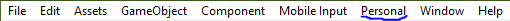
Questo invece e' il risultato finale dello script MyWindow.cs.
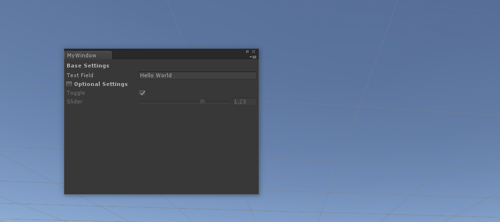
Lo script viene automaticamente letto da Unity, non devi metterlo da nessuna parte, tuttavia la prassi consiglia di metterlo all'interno di una cartella nominata Editor, che durante la Build del progetto viene automaticamente esclusa, siccome gli Editor Script non influiscono in nessun modo sull'Engine.
Gizmos
Le gizmos sono linee immaginarie che facilitano ad utilizzare o a capire a primo impatto, raggi, spazi oppure possono delimitare anche percorsi di IA ecc. Sono linee che con l'Editor vanno a stretto contatto e facilita non poco l'uso. Queste linee si definiscono immaginarie perche' non visibile, almeno non in maniera base, in Runtime (ovvero durante l'esecuzione del gioco).
Alcune Gizmos a volte vengono utilizzate per la generazione di linee da 1px anche durante il gioco stesso, ma oramai sono quasi rimpiazzate dalle Mesh Line, che sono linee non per forza di 1px, interactabili e sopratutto estensibili.
Qui vediamo un esempio di Gizmo line
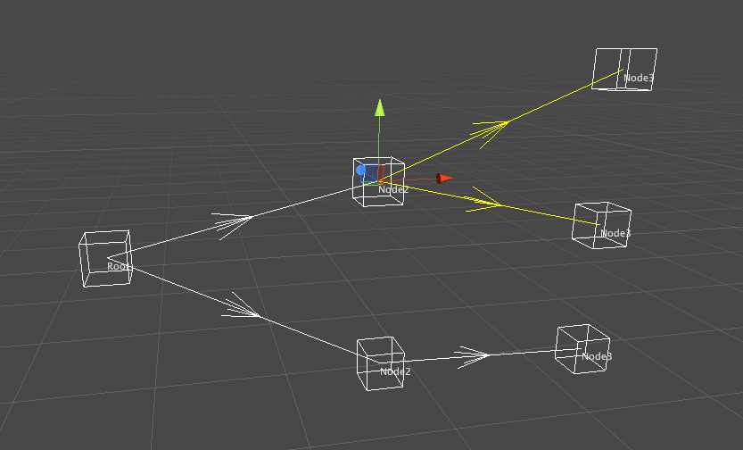
Qui invece uno di mesh line
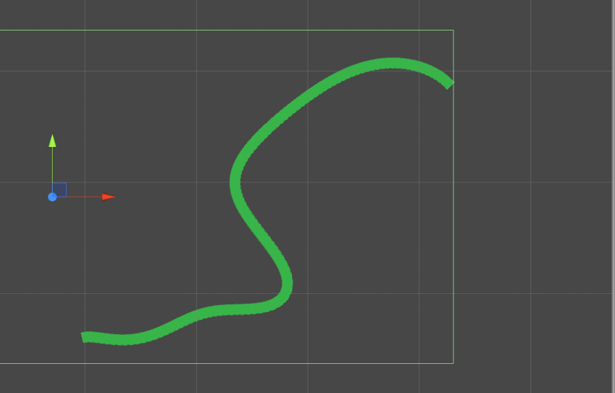
Conoscere queste tecniche puo' permettere ad un team di essere perfettamente sincronizzato nel lavoro, senza dover toccare con mano script fatti da alti.
Solitamente infatti uno script e' iniziato e finito dalla persona stessa e attraverso gli script editor, o l'inspector ne modifichi solo i parametri. Questo permette facilita' di lavoro senza doversi immedesimare sempre nella testa dell'altro programmatore.
Struttarti il tuo ambiente aper lavorare meglio
Unity si puo' definire un engine quasi open source, infatti e possibile estendere i suoi applicativi Editor direttamente dai codici, e' possibile modificare lo stile dell'inspector per creare assets a terzi, sistemi a node, e via discorrendo. Insomma e' possibile avere una potenza quasi infinita sotto mano. Non netriamo molto nel dettaglio, siccome questa e' una parte al quanto complessa e richiede conoscenze elevate della vecchia GUI code di Unity (oramai rimpiazza ta con la giovane UI).
Editor class
Attraverso alla classe Editor entrerai nella seconda parte di Unity, immensa e completa. Potrai creare sistemi che non solo rendomo migliore un codice ma lo facilitano pure nell'utilizzo (per esempio un sistema di generazione provedurale di una mappa che, richiederebbe molto tempo in Runtime).
Unity si puo' definire un engine quasi open source, infatti e possibile estendere i suoi applicativi Editor direttamente dai codici, e' possibile modificare lo stile dell'inspector per creare assets a terzi, sistemi a node, e via discorrendo. Insomma e' possibile avere una potenza quasi infinita sotto mano. Non netriamo molto nel dettaglio, siccome questa e' una parte al quanto complessa e richiede conoscenze elevate della vecchia GUI code di Unity (oramai rimpiazza ta con la giovane UI).
Editor class
Attraverso alla classe Editor entrerai nella seconda parte di Unity, immensa e completa. Potrai creare sistemi che non solo rendomo migliore un codice ma lo facilitano pure nell'utilizzo (per esempio un sistema di generazione provedurale di una mappa che, richiederebbe molto tempo in Runtime).